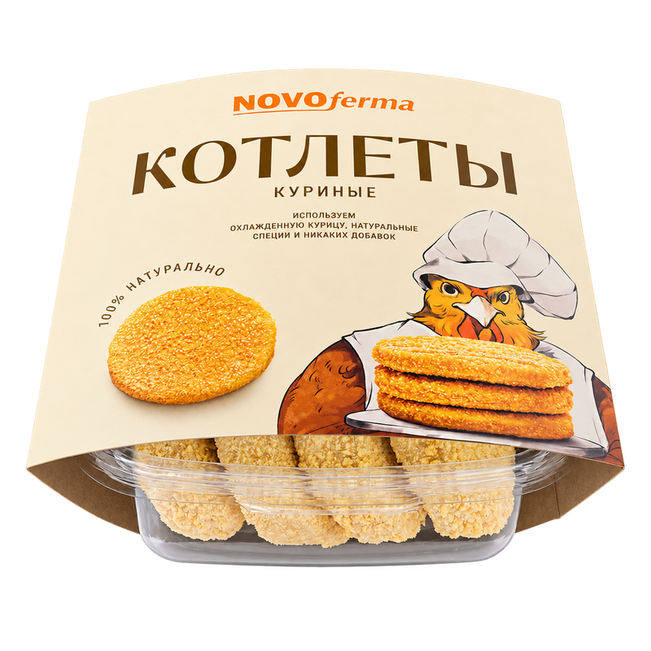
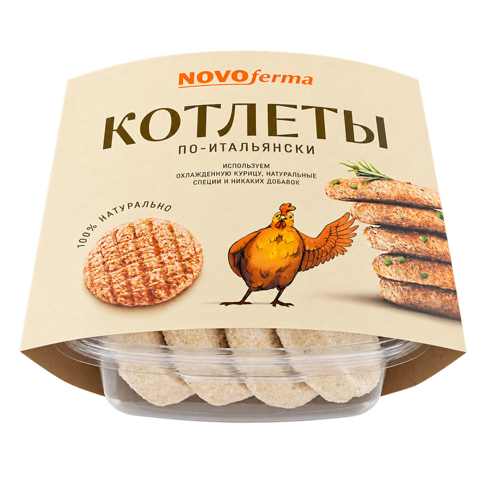

Котлеты и биточки / Из курицы
Котлеты по-итальянски
Масса нетто480 г
ПродуктЗамороженный
УпаковкаКонтейнер
На этикетке
Состав, аллергены, пищевая ценность, условия хранения и способ приготовления указаны на упаковке конкретного продукта.
Уточнить информацию